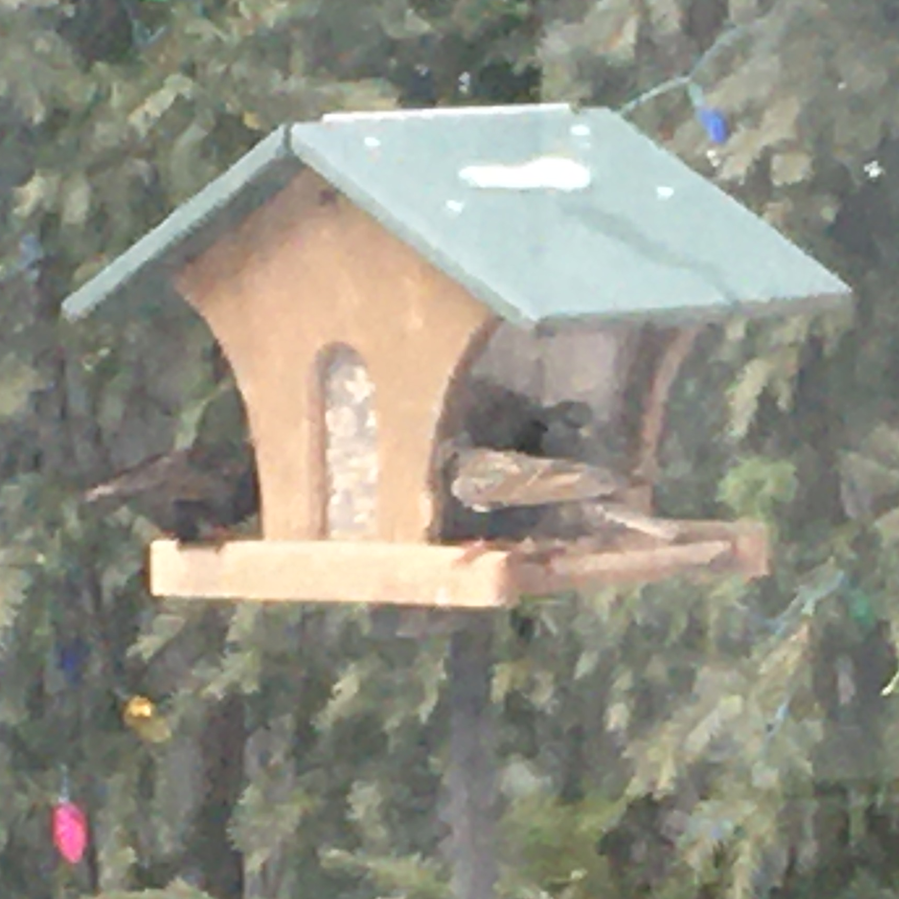
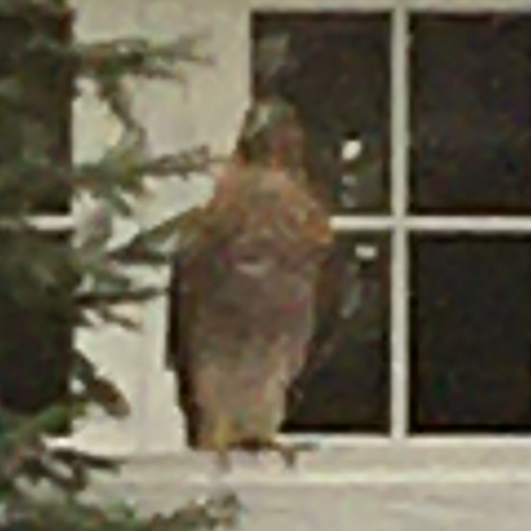

Brown Birds
House Sparrow

Size:
6"
Diet:
Seeds, fruit, insects
Notes:
Probably the most common bird to find hanging around my feeders. I always mix them up with other sparrows and house finches. Sometimes these little guys gang up in what I call the "sparrow mafia".
Red Tailed Hawk

Size:
19-25"
Diet:
Mice, birds, snakes, insects
Notes:
If a hawk eats a bird at a bird feeder, it's still a bird feeder, I suppose.